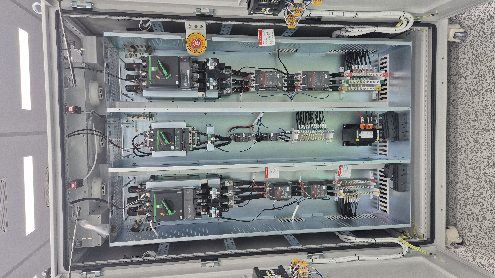
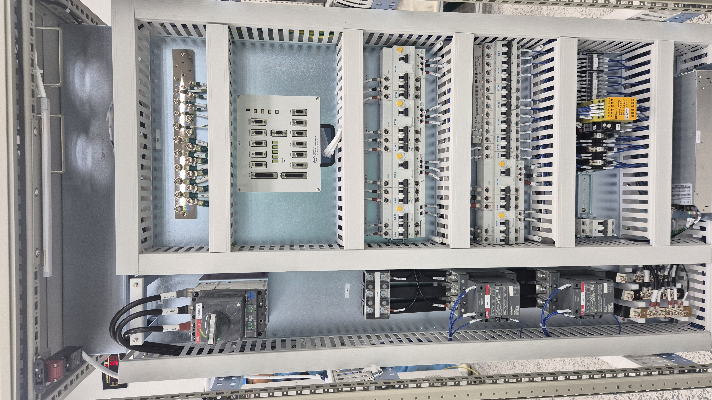

배선검사
예시 프로젝트 · Box 1 · 수정 화면
단계 설명
Line 배선, 포설, 체결 검사를 시행한다.
DVM을 통한 Pin Check 방식으로 시행할 것.
Gate 완료


사진 최대 5장 · 전체 40MiB · 이전 사진은 이력에 보존됩니다.
수정 사유와 변경 전후 기록, 수정자·시간이 이력에 남습니다.
예시 프로젝트 · Box 1 · 수정 화면
Line 배선, 포설, 체결 검사를 시행한다.
DVM을 통한 Pin Check 방식으로 시행할 것.
Gate 완료


사진 최대 5장 · 전체 40MiB · 이전 사진은 이력에 보존됩니다.
수정 사유와 변경 전후 기록, 수정자·시간이 이력에 남습니다.